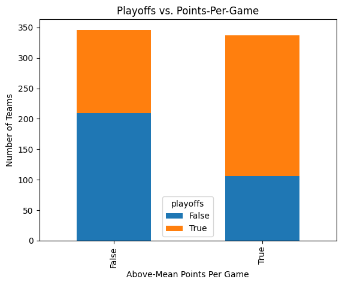
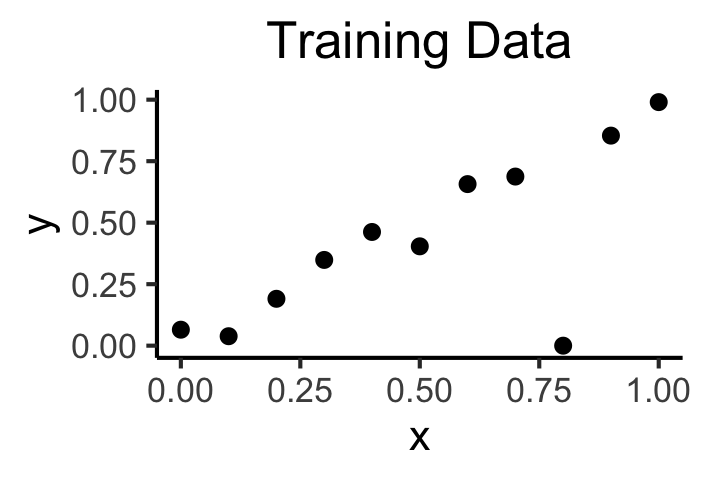
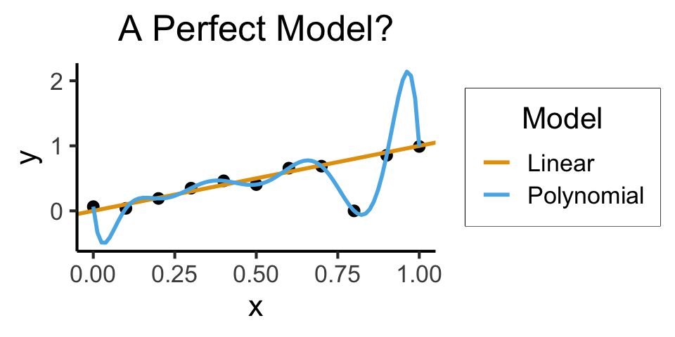
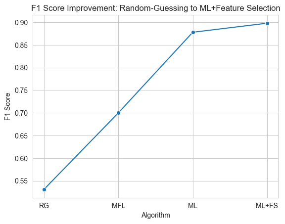
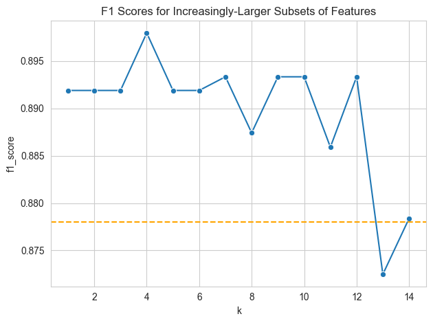

import requests
data_fname = "nba_team_data.csv"
nba_url = f"https://jpj.georgetown.domains/dsan5000-scratch/feature-selection/{data_fname}"
with open(data_fname, 'wb') as outfile:
data_content = requests.get(nba_url, stream=True).content
outfile.write(data_content)Feature Selection in Python
Extra Writeups
Colab Link
Since my last two data adventures were focused on public health data and international relations data, this week I’m going to focus on the topic that is tied for the most common topic students are doing for their projects, namely, sports data!
This time, rather than worrying about cleaning the data or exploring the data, we will “fast forward” to a particular task: using the data to accomplish a task, namely, predicting success in the NBA (National Basketball Association).
I chose the NBA because, unlike the NFL (National Football League) and the MLB (Major League Baseball) for example, the NBA is popular both inside and outside the US. But, if you don’t know anything about the NBA don’t worry, I will do my best to explain what’s going on at each point in the lab (and, as we’ll see in a moment, there is a codebook providing full explanations for each variable)
(1) The Dataset
For this lab we’ll be analyzing a panel dataset where each row represents a (team, season) pair.
A complicating factor in analyzing NBA data is that, unlike other sports like baseball, each NBA season spans two years: meaning, for example, the most recent season began in 2022 but ended in 2023. To make things easier for us, then, rather than recording seasons as two-year spans, I have simplified the dataset so that the year for each row represents the year in which the playoffs for that season occurred. To make this as clear as possible when examining the dataset, I’ve named the year variable po_year (for playoff year).
Like we did for the exploratory data analysis lab, let’s first download the dataset using the requests library to the same folder as this notebook, so that we don’t have to re-download the dataset every time we want to use it (meaning, once you run the following cell once, you don’t need to run it again, even if you restart the notebook)
And one more cell, this time downloading the codebook for the dataset:
codebook_fname = "nba_team_codebook.csv"
codebook_url = f"https://jpj.georgetown.domains/dsan5000-scratch/feature-selection/{codebook_fname}"
with open(codebook_fname, 'wb') as outfile:
codebook_content = requests.get(codebook_url, stream=True).content
outfile.write(codebook_content)You should now have a file called nba_team_data.csv within the same folder as this notebook. Let’s open the data file using Pandas and examine the first few rows:
import pandas as pd
import numpy as npnba_df = pd.read_csv("nba_team_data.csv")
nba_df.head()| year_team | po_year | team_full | mean_age | mean_height | mean_weight | PtsSeason | OppPtsSeason | PtsDiff | Reb | Ast | Stl | Blk | To | Pf | Dreb | Oreb | playoffs | |
|---|---|---|---|---|---|---|---|---|---|---|---|---|---|---|---|---|---|---|
| 0 | 1998_Atlanta Hawks | 1998 | Atlanta Hawks | 28.250000 | 199.231250 | 99.166551 | 95.9 | 92.3 | 3.6 | 42.8 | 19.0 | 8.0 | 5.9 | 14.0 | 20.5 | 29.5 | 13.4 | True |
| 1 | 1998_Boston Celtics | 1998 | Boston Celtics | 25.857143 | 200.297143 | 95.027524 | 95.9 | 98.5 | -2.6 | 39.5 | 22.1 | 12.0 | 4.5 | 15.6 | 26.9 | 24.9 | 14.6 | False |
| 2 | 1998_Charlotte Hornets | 1998 | Charlotte Hornets | 29.733333 | 200.829333 | 101.755805 | 96.6 | 94.6 | 2.0 | 40.1 | 23.4 | 8.2 | 3.7 | 14.4 | 21.4 | 28.4 | 11.7 | True |
| 3 | 1998_Chicago Bulls | 1998 | Chicago Bulls | 30.600000 | 201.337333 | 103.691131 | 96.7 | 89.6 | 7.1 | 44.1 | 23.1 | 8.6 | 4.3 | 13.0 | 21.1 | 29.2 | 14.9 | True |
| 4 | 1998_Cleveland Cavaliers | 1998 | Cleveland Cavaliers | 26.375000 | 199.231250 | 96.756844 | 92.5 | 89.8 | 2.7 | 39.8 | 22.9 | 9.9 | 5.0 | 16.6 | 23.7 | 28.2 | 11.6 | True |
As we’ve talked about in previous lectures, you can use your Data Terminator vision to begin understanding “what’s going on” in this dataset by
- Sweeping your eyes over each row, to figure out what the rows represent,
- Sweeping your eyes over each column, to figure out what the columns represent,
- Examining whether there is a unique ID for each observation, and then
- (If the data is already tidy) looking at individual values to determine what they represent: for example, by looking at a value within the
mean_agecolumn, can we infer what the units of this column are? (In this case, the answer is years).
Now let’s look at the codebook:
codebook_df = pd.read_csv("nba_team_codebook.csv")
codebook_df| variable | description | type | |
|---|---|---|---|
| 0 | year_team | Unique identifier of the form {po_year}_{team_... | str |
| 1 | po_year | The year that the season's playoffs took place... | int |
| 2 | team_full | Full name of the team | str |
| 3 | mean_age | Mean age of the team's members that year, in y... | float |
| 4 | mean_height | Mean height of the team's members that year, i... | float |
| 5 | mean_weight | Mean weight of the team's members that year, i... | float |
| 6 | PtsSeason | The team's average points per game that year | float |
| 7 | OppPtsSeason | The average number of points scored by the tea... | float |
| 8 | PtsDiff | The difference between PtsSeason and OppPtsSeason | float |
| 9 | Reb | The team's average number of rebounds per game... | float |
| 10 | Ast | The team's average number of assists per game ... | float |
| 11 | Stl | The team's average number of steals per game t... | float |
| 12 | Blk | The team's average number of blocks per game t... | float |
| 13 | To | The team's average number of turnovers per gam... | float |
| 14 | Pf | The team's average number of personal fouls pe... | float |
| 15 | Dreb | The team's average number of defensive rebound... | float |
| 16 | Oreb | The team's average number of offensive rebound... | float |
| 17 | playoffs | TRUE if the team made the playoffs that year, ... | bool |
We can use this codebook to obtain a description for any variable we don’t understand. For example, if we don’t know what the OppPtsSeason variable means, we can use Pandas’ .loc[] syntax to obtain just the row in the codebook corresponding to this variable, and examine the full description value in this row:
var_row = codebook_df.loc[codebook_df['variable'] == "OppPtsSeason","description"]
var_row7 The average number of points scored by the tea...
Name: description, dtype: objectNote that this is not entirely satisfactory, since the full description value is cut off—this happens because the .loc[] syntax returns a pd.Series object containing all matches. In this case, since we know there is only going to be one match, we can take the result of the .loc[] call and extract just the first (and only) match by extracting .iloc[0]:
var_row.iloc[0]"The average number of points scored by the team's opponents that year"And we see that now, rather than a pd.Series object, we have the full string description of the variable we wanted a description for.
Quick aside:
DataFrametodict
Given how much work it took just now to extract the description forOppPtsSeason, you may have a hunch that apd.DataFrameis probably not the most efficient format for storing a codebook.
For this reason, when I am working with codebooks, I usually convert thepd.DataFramecontaining the codebook into a more straightforward Python dictionary object.
codebook_dict = codebook_df.set_index('variable').to_dict(orient='index')Now we can more easily check the information we have about a variable:
codebook_dictis a set of key-value pairs, where the keys are the variable names and the values are the information we have about that variable. Now, for example, to access all of the information we have about theBlkvariable, we can just run the following line of code:
codebook_dict['Blk']{'description': "The team's average number of blocks per game that year",
'type': 'float'}(2) The Supervised Learning Task
Now that we have a feel for the data, I can reveal the task we’re hoping to accomplish by examining this data:
Our aim is to develop a model of team-level “success” in the NBA, by finding what properties of a (team,season) pair best predict whether or not the team makes the playoffs that year.
We can gain some initial intuition around this task by, for example, creating a cross-tabulation showing how particular variables differ between teams that did and did not make the playoffs in a given year.
(Note that this is not a very effective way of using cross-tabulation, since it is very rare for two (team,season) pairs to have the exact same average number of points, but it suffices here to show a general pattern)
pd.crosstab(nba_df['PtsSeason'], nba_df['playoffs'])| playoffs | False | True |
|---|---|---|
| PtsSeason | ||
| 81.9 | 1 | 0 |
| 84.2 | 1 | 0 |
| 84.8 | 1 | 0 |
| 85.4 | 1 | 0 |
| 85.6 | 1 | 0 |
| ... | ... | ... |
| 117.0 | 0 | 1 |
| 117.7 | 0 | 1 |
| 117.8 | 0 | 1 |
| 118.1 | 0 | 1 |
| 118.7 | 0 | 1 |
245 rows × 2 columns
From this cross-tabulation, we can already see an interesting aspect of the data: looking at the first five rows of the cross-tabulation, we can see that
For every (team,season) pair where the team scored 85.6 points per game or less, that team failed to make the playoffs in that season.
Then, looking at the last five rows of the cross-tabulation, we can see that
For every (team,season) pair where the team scored 117.0 points per game or more, that team successfully made the playoffs in that season.
Therefore, if we consider this as an EDA step, we may start to formulate a hypothesis that scoring more points per game increases the likelihood of making the playoffs. This may seem like an intuitive/obvious point, but remember that the point of EDA is for us to probe and challenge our preexisting (prior!) intuitions, seeing whether or not they hold or fail to hold when we actually look at the data, and updating our priors accordingly.
Now, to make sure that we’re not relying on engineer’s induction here—meaning, to check whether this pattern that we see in the first 5 and last 5 rows actually holds across the entire dataset—let’s make a new dummy variable above_mean_pts which is equal to 1 if the team’s points per game in a given season was above the mean points per game across all teams in that season, and equal to 0 otherwise.
As a way to help us compute this variable, and to show the usefulness of a topic from lecture, let’s first compute the \(z\)-score for each (team,season) pair: that is, compute a new column containing the score \(z_{i,t}\) for team \(i\) in season \(t\) as
\[ z_{i,t} = \frac{\texttt{pts}_{i,t} - \mu_t}{\sigma_t}, \]
where \(\mu_t\) represents the mean of all teams’ points per game stat in season \(t\), and \(\sigma_t\) represents the standard deviation of all teams’ points per game stat in season \(t\):
compute_z_score = lambda x: (x - x.mean()) / x.std()
nba_df['season_pts_z_score'] = nba_df.groupby('po_year')['PtsSeason'].transform(compute_z_score)#compute_z_score = lambda x: (x - x.mean()) / x.std()
#nba_df.insert(0, 'pts_z_score', nba_df.groupby('po_year')['PtsSeason'].transform(compute_z_score))nba_df.head()| year_team | po_year | team_full | mean_age | mean_height | mean_weight | PtsSeason | OppPtsSeason | PtsDiff | Reb | Ast | Stl | Blk | To | Pf | Dreb | Oreb | playoffs | season_pts_z_score | |
|---|---|---|---|---|---|---|---|---|---|---|---|---|---|---|---|---|---|---|---|
| 0 | 1998_Atlanta Hawks | 1998 | Atlanta Hawks | 28.250000 | 199.231250 | 99.166551 | 95.9 | 92.3 | 3.6 | 42.8 | 19.0 | 8.0 | 5.9 | 14.0 | 20.5 | 29.5 | 13.4 | True | 0.082901 |
| 1 | 1998_Boston Celtics | 1998 | Boston Celtics | 25.857143 | 200.297143 | 95.027524 | 95.9 | 98.5 | -2.6 | 39.5 | 22.1 | 12.0 | 4.5 | 15.6 | 26.9 | 24.9 | 14.6 | False | 0.082901 |
| 2 | 1998_Charlotte Hornets | 1998 | Charlotte Hornets | 29.733333 | 200.829333 | 101.755805 | 96.6 | 94.6 | 2.0 | 40.1 | 23.4 | 8.2 | 3.7 | 14.4 | 21.4 | 28.4 | 11.7 | True | 0.261932 |
| 3 | 1998_Chicago Bulls | 1998 | Chicago Bulls | 30.600000 | 201.337333 | 103.691131 | 96.7 | 89.6 | 7.1 | 44.1 | 23.1 | 8.6 | 4.3 | 13.0 | 21.1 | 29.2 | 14.9 | True | 0.287508 |
| 4 | 1998_Cleveland Cavaliers | 1998 | Cleveland Cavaliers | 26.375000 | 199.231250 | 96.756844 | 92.5 | 89.8 | 2.7 | 39.8 | 22.9 | 9.9 | 5.0 | 16.6 | 23.7 | 28.2 | 11.6 | True | -0.786678 |
Now that we’ve applied this transformation to PtsSeason, given what we know about the \(z\)-score, we know that teams whose points per game stat was above the average for all teams in that season will have a positive \(z\)-score, and teams whose points per game stat was below the average will have a negative \(z\)-score. Therefore, we can compute our desired above_mean_pts variable by just checking whether or not the \(z\)-score is positive:
nba_df['above_mean_pts'] = nba_df['season_pts_z_score'] > 0nba_df| year_team | po_year | team_full | mean_age | mean_height | mean_weight | PtsSeason | OppPtsSeason | PtsDiff | Reb | Ast | Stl | Blk | To | Pf | Dreb | Oreb | playoffs | season_pts_z_score | above_mean_pts | |
|---|---|---|---|---|---|---|---|---|---|---|---|---|---|---|---|---|---|---|---|---|
| 0 | 1998_Atlanta Hawks | 1998 | Atlanta Hawks | 28.250000 | 199.231250 | 99.166551 | 95.9 | 92.3 | 3.6 | 42.8 | 19.0 | 8.0 | 5.9 | 14.0 | 20.5 | 29.5 | 13.4 | True | 0.082901 | True |
| 1 | 1998_Boston Celtics | 1998 | Boston Celtics | 25.857143 | 200.297143 | 95.027524 | 95.9 | 98.5 | -2.6 | 39.5 | 22.1 | 12.0 | 4.5 | 15.6 | 26.9 | 24.9 | 14.6 | False | 0.082901 | True |
| 2 | 1998_Charlotte Hornets | 1998 | Charlotte Hornets | 29.733333 | 200.829333 | 101.755805 | 96.6 | 94.6 | 2.0 | 40.1 | 23.4 | 8.2 | 3.7 | 14.4 | 21.4 | 28.4 | 11.7 | True | 0.261932 | True |
| 3 | 1998_Chicago Bulls | 1998 | Chicago Bulls | 30.600000 | 201.337333 | 103.691131 | 96.7 | 89.6 | 7.1 | 44.1 | 23.1 | 8.6 | 4.3 | 13.0 | 21.1 | 29.2 | 14.9 | True | 0.287508 | True |
| 4 | 1998_Cleveland Cavaliers | 1998 | Cleveland Cavaliers | 26.375000 | 199.231250 | 96.756844 | 92.5 | 89.8 | 2.7 | 39.8 | 22.9 | 9.9 | 5.0 | 16.6 | 23.7 | 28.2 | 11.6 | True | -0.786678 | False |
| ... | ... | ... | ... | ... | ... | ... | ... | ... | ... | ... | ... | ... | ... | ... | ... | ... | ... | ... | ... | ... |
| 678 | 2020_Sacramento Kings | 2020 | Sacramento Kings | 25.117647 | 199.763529 | 98.242691 | 110.1 | 112.1 | -2.0 | 42.6 | 23.8 | 7.7 | 4.1 | 13.7 | 22.2 | 32.9 | 9.7 | False | -0.411031 | False |
| 679 | 2020_San Antonio Spurs | 2020 | San Antonio Spurs | 25.750000 | 199.390000 | 99.223250 | 114.1 | 115.2 | -1.1 | 44.6 | 24.7 | 7.3 | 5.5 | 12.2 | 19.4 | 35.6 | 9.0 | False | 0.627363 | True |
| 680 | 2020_Toronto Raptors | 2020 | Toronto Raptors | 25.555556 | 198.261111 | 96.539497 | 112.8 | 106.5 | 6.3 | 45.3 | 25.2 | 8.6 | 5.0 | 13.8 | 21.8 | 36.0 | 9.3 | True | 0.289885 | True |
| 681 | 2020_Utah Jazz | 2020 | Utah Jazz | 25.666667 | 196.285556 | 98.353865 | 111.3 | 108.8 | 2.5 | 44.6 | 22.3 | 6.1 | 4.0 | 14.2 | 20.3 | 35.4 | 9.1 | True | -0.099513 | False |
| 682 | 2020_Washington Wizards | 2020 | Washington Wizards | 25.210526 | 197.718947 | 96.925448 | 114.4 | 119.1 | -4.7 | 42.1 | 25.0 | 8.0 | 4.3 | 13.5 | 22.7 | 31.9 | 10.2 | False | 0.705243 | True |
683 rows × 20 columns
And, finally, we can generate a much more useful cross-tabulation of our variables:
pts_playoffs_count = pd.crosstab(nba_df['above_mean_pts'], nba_df['playoffs'])
pts_playoffs_count| playoffs | False | True |
|---|---|---|
| above_mean_pts | ||
| False | 209 | 137 |
| True | 106 | 231 |
And then plot the values in this cross-tabulation for an even more intuitive representation, where for each value of above_mean_pts we will have a bar representing the total number of (team,season) pairs in our dataset where the team had above-the-mean points per game in that season, and each bar will be further split into two “sub-rectangles” representing the proportions of these counts representing teams which also made the playoffs in that season:
import matplotlib.pyplot as plt
crosstab_plot = pts_playoffs_count.plot(kind='bar', stacked=True)
crosstab_plot.grid(False)
plt.title('Playoffs vs. Points-Per-Game')
plt.xlabel('Above-Mean Points Per Game')
plt.ylabel('Number of Teams')
plt.show()
Notice how, in both the cross-tabulation and plot above, having raw counts on their own was a bit of a nuisance, in the sense that we really care about their proportions to one another. The plot made this a bit easier, since we could compare the areas of the two sub-rectangles within each bar, but it’d be more helpful if we could read these totals directly off of the cross-tabulation. To accomplish this, we can include the margins=True argument to pd.crosstab() and it will produce, in addition to the output above, a totals column and totals row:
pts_playoffs_count = pd.crosstab(nba_df['above_mean_pts'], nba_df['playoffs'], margins=True)
pts_playoffs_count| playoffs | False | True | All |
|---|---|---|---|
| above_mean_pts | |||
| False | 209 | 137 | 346 |
| True | 106 | 231 | 337 |
| All | 315 | 368 | 683 |
We can see from this table that, among all 337 (team,season) pairs where the team had above average points-per-game in that season, the team made the playoffs 231 times and failed to make the playoffs 106 times. On the other hand, of the 346 (team,season) pairs where the team had below average points-per-game in that season, that team made the playoffs only 137 times and failed to make the playoffs in 209 cases.
Notice how I’m giving raw counts here, but contextualizing them by also providing the total number of cases in each row. The pd.crosstab() function has another optional parameter normalize (on top of the margins=True option we provided above) which will do this normalization for us, thus producing actual full-on probability distributions:
- By default, the produced table contains counts, not probabilities
- If we include
normalize='all', Pandas will generate a table representing the joint distribution of the pair of variables (above_mean_points,playoffs):
pts_playoffs_joint = pd.crosstab(nba_df['above_mean_pts'], nba_df['playoffs'], normalize='all')
pts_playoffs_joint| playoffs | False | True |
|---|---|---|
| above_mean_pts | ||
| False | 0.306003 | 0.200586 |
| True | 0.155198 | 0.338214 |
So that from this table we can see that, for example, about 20% of all (team,season) pairs represent teams that made the playoffs despite having below-the-mean points per game in that season.
- If we include
normalize='all'in addition tomargins=True, Pandas will produce a table representing both the joint distribution (within the non-total cells) and the marginal distributions (in the row/column labeledAll):
pd.crosstab(nba_df['above_mean_pts'], nba_df['playoffs'], margins=True, normalize='all')| playoffs | False | True | All |
|---|---|---|---|
| above_mean_pts | |||
| False | 0.306003 | 0.200586 | 0.506589 |
| True | 0.155198 | 0.338214 | 0.493411 |
| All | 0.461201 | 0.538799 | 1.000000 |
So that from the row labeled All in this table we can see that, for example, approximately 46% of all (team, season) pairs in the dataset correspond to teams who made the playoffs in that season.
- If we include
normalize='index', Pandas will generate a table representing the conditional distribution ofplayoffsgivenabove_mean_points:
pd.crosstab(nba_df['above_mean_pts'], nba_df['playoffs'], normalize='index')| playoffs | False | True |
|---|---|---|
| above_mean_pts | ||
| False | 0.604046 | 0.395954 |
| True | 0.314540 | 0.685460 |
Notice that the rows here (but not the columns) sum to 1. This table therefore tells us, for example, that across all (team,season) pairs where the team had above-the-mean points per game in that season (above_mean_points is True), about 69% of these teams made the playoffs in that season.
- Finally, if we include
normalize='columns', Pandas will produce a table representing the conditional distribution ofabove_mean_ptsgivenplayoffs:
pd.crosstab(nba_df['above_mean_pts'], nba_df['playoffs'], normalize='columns')| playoffs | False | True |
|---|---|---|
| above_mean_pts | ||
| False | 0.663492 | 0.372283 |
| True | 0.336508 | 0.627717 |
Notice that now the columns (but not the rows) sum to 1. This table therefore tells us, for example, that among (team,season) pairs where the team made the playoffs in that season (playoffs is True), about 63% of these pairs correspond to teams which had above-the-mean points per game in that season.
(3) Machine Learning Without Feature Selection
While the cross-tabulations/plots in the previous section can help us think about the relationships between our features (all of the non-ID variables besides playoffs) and our label (the playoffs variable), and which features might be more or less helpful for predicting the labels for each (team,season) pair, we’re going to need to have a set of metrics for measuring how well we’re doing at this prediction task, as well as a range of values that these metrics may take on telling us whether we’re doing “not very well” vs. “very well” on the task.
In general, a very good rule-of-thumb to use in machine learning is to come up with a baseline value and gold standard value for the metric. In our case, for example, we can quickly think about generating the following two values:
- A baseline value of our success metric, which tells us how well an algorithm randomly guessing would do on the task—in other words, an algorithm that is not learning anything at all. If we just write a function that randomly guesses
FalseorTrueas theplayoffvalue for a given (team, season) pair, how well does that function do on our task? - Another baseline value which is slightly smarter, but only slightly: it should guess the most common value of the label every single time. In our case, since there are more (team,season) pairs representing teams which made the playoffs in that season than there are (team,season) pairs representing teams which failed to make the playoffs, this baseline value would be derived from a function that always guesses the value
Truefor ourplayoffslabel. - Finally, since here we’re trying to look at the efficacy of feature selection, we should take an “off-the-shelf” machine learning method and see how well it does without performing any feature selection.
(4) Baseline 1: Random Guessing
Although it may seem weird at first to sit down and purposefully code a “bad” model, you will thank yourself for it later, since it can serve as a “meter stick” to help you keep track of progress that you’re making as you improve/tweak your real model’s parameters.
So, making sure that we set the seed on NumPy’s random number generator so that results are replicable from here on out, let’s create this random-guessing baseline model:
# Here we set the seed by creating a "random generator object"
# in NumPy, which we'll use from here onwards when we need to
# generate random numbers
rng = np.random.default_rng(5000)As we move from data exploration to actual machine learning, also, we’ll want to convert our boolean playoffs label into a numeric value, since many of the ML algorithms and evaluation functions in Scikit-learn require fully-numeric values (vectors and/or matrices, for example) as inputs.
To do this, we’ll use what I think is the easiest way to convert booleans into integers in Pandas, which is just to apply() Python’s int() conversion function to the entire column:
nba_df['playoffs'] = nba_df['playoffs'].apply(int)
nba_df| year_team | po_year | team_full | mean_age | mean_height | mean_weight | PtsSeason | OppPtsSeason | PtsDiff | Reb | Ast | Stl | Blk | To | Pf | Dreb | Oreb | playoffs | season_pts_z_score | above_mean_pts | |
|---|---|---|---|---|---|---|---|---|---|---|---|---|---|---|---|---|---|---|---|---|
| 0 | 1998_Atlanta Hawks | 1998 | Atlanta Hawks | 28.250000 | 199.231250 | 99.166551 | 95.9 | 92.3 | 3.6 | 42.8 | 19.0 | 8.0 | 5.9 | 14.0 | 20.5 | 29.5 | 13.4 | 1 | 0.082901 | True |
| 1 | 1998_Boston Celtics | 1998 | Boston Celtics | 25.857143 | 200.297143 | 95.027524 | 95.9 | 98.5 | -2.6 | 39.5 | 22.1 | 12.0 | 4.5 | 15.6 | 26.9 | 24.9 | 14.6 | 0 | 0.082901 | True |
| 2 | 1998_Charlotte Hornets | 1998 | Charlotte Hornets | 29.733333 | 200.829333 | 101.755805 | 96.6 | 94.6 | 2.0 | 40.1 | 23.4 | 8.2 | 3.7 | 14.4 | 21.4 | 28.4 | 11.7 | 1 | 0.261932 | True |
| 3 | 1998_Chicago Bulls | 1998 | Chicago Bulls | 30.600000 | 201.337333 | 103.691131 | 96.7 | 89.6 | 7.1 | 44.1 | 23.1 | 8.6 | 4.3 | 13.0 | 21.1 | 29.2 | 14.9 | 1 | 0.287508 | True |
| 4 | 1998_Cleveland Cavaliers | 1998 | Cleveland Cavaliers | 26.375000 | 199.231250 | 96.756844 | 92.5 | 89.8 | 2.7 | 39.8 | 22.9 | 9.9 | 5.0 | 16.6 | 23.7 | 28.2 | 11.6 | 1 | -0.786678 | False |
| ... | ... | ... | ... | ... | ... | ... | ... | ... | ... | ... | ... | ... | ... | ... | ... | ... | ... | ... | ... | ... |
| 678 | 2020_Sacramento Kings | 2020 | Sacramento Kings | 25.117647 | 199.763529 | 98.242691 | 110.1 | 112.1 | -2.0 | 42.6 | 23.8 | 7.7 | 4.1 | 13.7 | 22.2 | 32.9 | 9.7 | 0 | -0.411031 | False |
| 679 | 2020_San Antonio Spurs | 2020 | San Antonio Spurs | 25.750000 | 199.390000 | 99.223250 | 114.1 | 115.2 | -1.1 | 44.6 | 24.7 | 7.3 | 5.5 | 12.2 | 19.4 | 35.6 | 9.0 | 0 | 0.627363 | True |
| 680 | 2020_Toronto Raptors | 2020 | Toronto Raptors | 25.555556 | 198.261111 | 96.539497 | 112.8 | 106.5 | 6.3 | 45.3 | 25.2 | 8.6 | 5.0 | 13.8 | 21.8 | 36.0 | 9.3 | 1 | 0.289885 | True |
| 681 | 2020_Utah Jazz | 2020 | Utah Jazz | 25.666667 | 196.285556 | 98.353865 | 111.3 | 108.8 | 2.5 | 44.6 | 22.3 | 6.1 | 4.0 | 14.2 | 20.3 | 35.4 | 9.1 | 1 | -0.099513 | False |
| 682 | 2020_Washington Wizards | 2020 | Washington Wizards | 25.210526 | 197.718947 | 96.925448 | 114.4 | 119.1 | -4.7 | 42.1 | 25.0 | 8.0 | 4.3 | 13.5 | 22.7 | 31.9 | 10.2 | 0 | 0.705243 | True |
683 rows × 20 columns
We can now see in the above table that (scrolling horizontally to the playoffs column) entries where the playoffs value was the boolean True now have the integer value 1, and entries where the playoffs value was the boolean False now have the integer value 0.
Given our nba_df dataset with the now-numeric label, we can make a new column called random_guess which just generates a random boolean value for each observation, then compute how well this random-guess model is doing by comparing the random_guess model with the true values in playoffs.
Imporant Aside: Accuracy vs. F1 Score!
You have maybe noticed that I’m being purposefully vague about measuring how well a given classifier is doing: that’s because, while it may feel instinctively “right”/natural to say “I’ll see how well my classifier is doing by measuring its accuracy on a task”, the notion of accuracy in machine learning is (sadly but truly) a 🚨RED FLAG🚨 that you should learn to be wary of! Let’s quickly see why, by going over to the
Extra slides on Machine Learning
that are now posted in the “Extra Writeups” section of the website for my sections.
Specifically, you should look at them from the beginning (they overlap, purposefully, with the slides from this week where I started talking about Supervised vs. Unsupervised learning on the liked-and-disliked-houses dataset) up to the Measuring Errors: F1 Score slide, which will introduce you to the F1 Score that we will be using here to quantify how well/not-well our random-guessing approach is doing at our task.
Now that we have seen why the F1 score is preferable to accuracy as a measurement of the performance of our algorithms, let’s generate guesses and evaluate our random-guess model using the F1 score:
# Generate one random guess (a random choice of an element from
# the python list [0,1]) per observation in the dataset
num_obs = len(nba_df)
random_guesses = rng.choice([0,1], num_obs)
nba_df['random_guess'] = random_guesses
nba_df| year_team | po_year | team_full | mean_age | mean_height | mean_weight | PtsSeason | OppPtsSeason | PtsDiff | Reb | ... | Stl | Blk | To | Pf | Dreb | Oreb | playoffs | season_pts_z_score | above_mean_pts | random_guess | |
|---|---|---|---|---|---|---|---|---|---|---|---|---|---|---|---|---|---|---|---|---|---|
| 0 | 1998_Atlanta Hawks | 1998 | Atlanta Hawks | 28.250000 | 199.231250 | 99.166551 | 95.9 | 92.3 | 3.6 | 42.8 | ... | 8.0 | 5.9 | 14.0 | 20.5 | 29.5 | 13.4 | 1 | 0.082901 | True | 0 |
| 1 | 1998_Boston Celtics | 1998 | Boston Celtics | 25.857143 | 200.297143 | 95.027524 | 95.9 | 98.5 | -2.6 | 39.5 | ... | 12.0 | 4.5 | 15.6 | 26.9 | 24.9 | 14.6 | 0 | 0.082901 | True | 0 |
| 2 | 1998_Charlotte Hornets | 1998 | Charlotte Hornets | 29.733333 | 200.829333 | 101.755805 | 96.6 | 94.6 | 2.0 | 40.1 | ... | 8.2 | 3.7 | 14.4 | 21.4 | 28.4 | 11.7 | 1 | 0.261932 | True | 0 |
| 3 | 1998_Chicago Bulls | 1998 | Chicago Bulls | 30.600000 | 201.337333 | 103.691131 | 96.7 | 89.6 | 7.1 | 44.1 | ... | 8.6 | 4.3 | 13.0 | 21.1 | 29.2 | 14.9 | 1 | 0.287508 | True | 0 |
| 4 | 1998_Cleveland Cavaliers | 1998 | Cleveland Cavaliers | 26.375000 | 199.231250 | 96.756844 | 92.5 | 89.8 | 2.7 | 39.8 | ... | 9.9 | 5.0 | 16.6 | 23.7 | 28.2 | 11.6 | 1 | -0.786678 | False | 1 |
| ... | ... | ... | ... | ... | ... | ... | ... | ... | ... | ... | ... | ... | ... | ... | ... | ... | ... | ... | ... | ... | ... |
| 678 | 2020_Sacramento Kings | 2020 | Sacramento Kings | 25.117647 | 199.763529 | 98.242691 | 110.1 | 112.1 | -2.0 | 42.6 | ... | 7.7 | 4.1 | 13.7 | 22.2 | 32.9 | 9.7 | 0 | -0.411031 | False | 1 |
| 679 | 2020_San Antonio Spurs | 2020 | San Antonio Spurs | 25.750000 | 199.390000 | 99.223250 | 114.1 | 115.2 | -1.1 | 44.6 | ... | 7.3 | 5.5 | 12.2 | 19.4 | 35.6 | 9.0 | 0 | 0.627363 | True | 0 |
| 680 | 2020_Toronto Raptors | 2020 | Toronto Raptors | 25.555556 | 198.261111 | 96.539497 | 112.8 | 106.5 | 6.3 | 45.3 | ... | 8.6 | 5.0 | 13.8 | 21.8 | 36.0 | 9.3 | 1 | 0.289885 | True | 1 |
| 681 | 2020_Utah Jazz | 2020 | Utah Jazz | 25.666667 | 196.285556 | 98.353865 | 111.3 | 108.8 | 2.5 | 44.6 | ... | 6.1 | 4.0 | 14.2 | 20.3 | 35.4 | 9.1 | 1 | -0.099513 | False | 1 |
| 682 | 2020_Washington Wizards | 2020 | Washington Wizards | 25.210526 | 197.718947 | 96.925448 | 114.4 | 119.1 | -4.7 | 42.1 | ... | 8.0 | 4.3 | 13.5 | 22.7 | 31.9 | 10.2 | 0 | 0.705243 | True | 1 |
683 rows × 21 columns
We could compute the F1 score manually here (and it would be good practice/coding work for you!), but instead now we will finally import and use Scikit-learn, which has a built-in function for computing F-scores. To use it, we just need to provide the first two arguments, y_true and y_pred:
from sklearn.metrics import f1_scoref1_score(nba_df['playoffs'], nba_df['random_guess'])0.5313351498637602We can now also compute accuracy as
\[ \frac{\#\text{ Correct guesses}}{\#\text{ Total guesses}} \]
to see the difference between F1 score and accuracy:
nba_df['random_guess_correct'] = nba_df['playoffs'] == nba_df['random_guess']
correct_random_guess_rows = nba_df[nba_df['random_guess_correct'] == True]
random_guess_accuracy = len(correct_random_guess_rows) / len(nba_df)
random_guess_accuracy0.49633967789165445(5) Baseline 2: Guessing the Most Frequent Label
The two metrics (accuracy and F1 score) don’t seem so different in this case, but now let’s implement the second baseline model mentioned above, where we always guess the most frequent label no matter what observation we’re looking at.
Notice how, just as in the random-guessing case, here we are not even looking at the features of the individual observations at all. And yet, here we will almost always achieve a higher accuracy than the random-guessing approach, essentially because we are allowing a small “bit” of information about the labels to enter our algorithm here: whereas the random-guess model truly knows nothing about the distribution of labels in the dataset, the guess-most-frequent-label approach does know that there are more observations with a playoffs value of 1 than with a playoffs value of 0, and it is able to take advantage of this information:
# Since datasets can technically have more than one mode, the
# mode() function in Pandas returns a pd.Series object containing
# all of the mode values. Since in this case we know that there is
# only **one** mode (the value 1), we can just convert this
# one-item pd.Series directly into an integer value using Python's
# int() method:
most_frequent_label = int(nba_df['playoffs'].mode())
most_frequent_label/var/folders/n2/m7_fj5vx6c50_yj7g23mwmq00000gn/T/ipykernel_10671/1516993167.py:7: FutureWarning: Calling int on a single element Series is deprecated and will raise a TypeError in the future. Use int(ser.iloc[0]) instead
most_frequent_label = int(nba_df['playoffs'].mode())1nba_df['most_freq_guess'] = most_frequent_label
nba_df.head()| year_team | po_year | team_full | mean_age | mean_height | mean_weight | PtsSeason | OppPtsSeason | PtsDiff | Reb | ... | To | Pf | Dreb | Oreb | playoffs | season_pts_z_score | above_mean_pts | random_guess | random_guess_correct | most_freq_guess | |
|---|---|---|---|---|---|---|---|---|---|---|---|---|---|---|---|---|---|---|---|---|---|
| 0 | 1998_Atlanta Hawks | 1998 | Atlanta Hawks | 28.250000 | 199.231250 | 99.166551 | 95.9 | 92.3 | 3.6 | 42.8 | ... | 14.0 | 20.5 | 29.5 | 13.4 | 1 | 0.082901 | True | 0 | False | 1 |
| 1 | 1998_Boston Celtics | 1998 | Boston Celtics | 25.857143 | 200.297143 | 95.027524 | 95.9 | 98.5 | -2.6 | 39.5 | ... | 15.6 | 26.9 | 24.9 | 14.6 | 0 | 0.082901 | True | 0 | True | 1 |
| 2 | 1998_Charlotte Hornets | 1998 | Charlotte Hornets | 29.733333 | 200.829333 | 101.755805 | 96.6 | 94.6 | 2.0 | 40.1 | ... | 14.4 | 21.4 | 28.4 | 11.7 | 1 | 0.261932 | True | 0 | False | 1 |
| 3 | 1998_Chicago Bulls | 1998 | Chicago Bulls | 30.600000 | 201.337333 | 103.691131 | 96.7 | 89.6 | 7.1 | 44.1 | ... | 13.0 | 21.1 | 29.2 | 14.9 | 1 | 0.287508 | True | 0 | False | 1 |
| 4 | 1998_Cleveland Cavaliers | 1998 | Cleveland Cavaliers | 26.375000 | 199.231250 | 96.756844 | 92.5 | 89.8 | 2.7 | 39.8 | ... | 16.6 | 23.7 | 28.2 | 11.6 | 1 | -0.786678 | False | 1 | True | 1 |
5 rows × 23 columns
And now we can use Scikit-learn’s f1_score() function to compute the F1 score in this case as well:
f1_score(nba_df['playoffs'], nba_df['most_freq_guess'])0.7002854424357755And the accuracy of this most-frequent-label guess approach as well, for comparison:
nba_df['most_freq_guess_correct'] = nba_df['most_freq_guess'] == nba_df['playoffs']
correct_most_freq_rows = nba_df[nba_df['most_freq_guess_correct'] == True]
most_freq_accuracy = len(correct_most_freq_rows) / len(nba_df)
most_freq_accuracy0.5387994143484627Note that here, unlike in the liked-and-disliked-houses example from the slides, guessing the most-frequent label every time actually does produce a fairly high F1 score of about 0.7. So, if we were doing all this as research to put into a paper and submit to a CS journal, we would now have our set of baselines that we should be able to beat in order to show that our fancier machine-learning approach was actually learning something about the data, in a deeper sense than just e.g. learning what the most-frequent label was and always guessing that. In a Machine Learning paper, generally these two baseline approaches would appear in a table like the following (where I’ve left blanks in the slots for our fancy algorithm that we’re hoping can soundly “beat out” these baseline approaches):
| Algorithm | Accuracy | F1 Score |
|---|---|---|
| ML Algorithm + Feature Selection | ? | ? |
| ML Algorithm without Feature Selection | ? | ? |
| Baseline: Guess Most Frequent Label | 0.539 | 0.700 |
| Baseline: Random Guessing | 0.496 | 0.531 |
Where here I have bolded the F1 Score column to indicate that, as is standard practice in most CS journals, we are sorting the results by F1 score rather than accuracy or any other metric which might be “misled” by fake not-actually-learning-anything approaches like guessing the most frequent label.
In the next and final part, we will fill in these final “?” cells in the table, seeing what we are able to accomplish using a standard ML algorithm without feature selection, and then seeing how applying an additional feature selection step can improve upon the performance (in terms of F1 score) of the ML algorithm without this feature selection step.
To illustrate how standard the F1 score is, I went on the CS Arxiv (which I get email updates about, and check every day, incidentally!) and looked at the papers posted today in the Computation and Language category: I opened the very first paper I saw on the list and scrolled down without reading anything at all, and alas! There was an F1 score table right at the top of page 6 of the PDF. Which is just an example of how, the more familiar and comfortable you are with the F1 score and the two quantities it is built upon (precision and recall), the easier it will become for you to keep up with the Computer Science literature!
(6) Using an “Off-The-Shelf” Machine Learning Model
Since the Lab 3.2 Assignment asks you to train a Gaussian Naïve Bayes classifier, here I will instead use Scikit-learn’s Linear Support Vector Machine (SVM) Classifier. But, since Scikit-learn’s various classes and functions often work very similarly to one another, this will give you a good starting point to take what you learn here and apply it to the GaussianNB classifier on the assignment!
Quick Aside: Classification vs. Regression
If you take a quick look at the Scikit-learn documentation’s section on Support Vector Machines, you’ll see that it contains both Classification and Regression versions of the SVM algorithm:

This relates to what I mentioned in class, that when you’re first learning about ML algorithms, you can usually worry less about the distinction between discrete and continuous data than we’ve been worrying in class up to this point. Once you get more comfortable with how these ML algorithms work in general, then you can think more deeply about the difference (for example, in terms of the number of datapoints that will be needed for the ML algorithm to learn the relationship between features and labels), but for now I just wanted to point out that we could have done this entire lab with a continuous label rather than a discrete label, without much difference in the Scikit-learn code that we’re using!
So, to get started (and, Scikit-learn’s tutorial page is a good place to look for how to get started as well, more generally), we import the svm module within sklearn:
from sklearn import svmNow, since (as mentioned above) Scikit-learn is set up to work with numeric NumPy vectors/matrices rather than Pandas DataFrame objects, we’ll need to convert our nba_df object into a NumPy array. This can be done very quickly and straightforwardly, in most cases, by just accessing the .values attribute on the DataFrame itself, or on specific columns of the DataFrame:
# Drop the columns we created in the previous sections (e.g., for the
# random-guessing and guess-most-frequent-label models above), where we specify
# `errors='ignore'` so that this line doesn't crash if we've already dropped
# them at some point
prev_cols = [
'season_pts_z_score','above_mean_pts','random_guess','random_guess_correct',
'most_freq_guess', 'most_freq_guess_correct'
]
nba_df.drop(columns = prev_cols, inplace=True, errors='ignore')
# And now we specify the id columns (which sklearn can't use) and the label
# column, so that the feature columns are just all of the remaining columns in
# the DataFrame
id_cols = ['year_team','po_year','team_full']
label_col = 'playoffs'
feature_cols = [c for c in nba_df.columns if c != label_col and c not in id_cols]
feature_cols['mean_age',
'mean_height',
'mean_weight',
'PtsSeason',
'OppPtsSeason',
'PtsDiff',
'Reb',
'Ast',
'Stl',
'Blk',
'To',
'Pf',
'Dreb',
'Oreb']And now we’re ready to extract the subsets of nba_df that we’ll use as the feature matrix and label vector that we provide to Scikit-learn:
feature_matrix = nba_df[feature_cols].copy()
feature_matrix| mean_age | mean_height | mean_weight | PtsSeason | OppPtsSeason | PtsDiff | Reb | Ast | Stl | Blk | To | Pf | Dreb | Oreb | |
|---|---|---|---|---|---|---|---|---|---|---|---|---|---|---|
| 0 | 28.250000 | 199.231250 | 99.166551 | 95.9 | 92.3 | 3.6 | 42.8 | 19.0 | 8.0 | 5.9 | 14.0 | 20.5 | 29.5 | 13.4 |
| 1 | 25.857143 | 200.297143 | 95.027524 | 95.9 | 98.5 | -2.6 | 39.5 | 22.1 | 12.0 | 4.5 | 15.6 | 26.9 | 24.9 | 14.6 |
| 2 | 29.733333 | 200.829333 | 101.755805 | 96.6 | 94.6 | 2.0 | 40.1 | 23.4 | 8.2 | 3.7 | 14.4 | 21.4 | 28.4 | 11.7 |
| 3 | 30.600000 | 201.337333 | 103.691131 | 96.7 | 89.6 | 7.1 | 44.1 | 23.1 | 8.6 | 4.3 | 13.0 | 21.1 | 29.2 | 14.9 |
| 4 | 26.375000 | 199.231250 | 96.756844 | 92.5 | 89.8 | 2.7 | 39.8 | 22.9 | 9.9 | 5.0 | 16.6 | 23.7 | 28.2 | 11.6 |
| ... | ... | ... | ... | ... | ... | ... | ... | ... | ... | ... | ... | ... | ... | ... |
| 678 | 25.117647 | 199.763529 | 98.242691 | 110.1 | 112.1 | -2.0 | 42.6 | 23.8 | 7.7 | 4.1 | 13.7 | 22.2 | 32.9 | 9.7 |
| 679 | 25.750000 | 199.390000 | 99.223250 | 114.1 | 115.2 | -1.1 | 44.6 | 24.7 | 7.3 | 5.5 | 12.2 | 19.4 | 35.6 | 9.0 |
| 680 | 25.555556 | 198.261111 | 96.539497 | 112.8 | 106.5 | 6.3 | 45.3 | 25.2 | 8.6 | 5.0 | 13.8 | 21.8 | 36.0 | 9.3 |
| 681 | 25.666667 | 196.285556 | 98.353865 | 111.3 | 108.8 | 2.5 | 44.6 | 22.3 | 6.1 | 4.0 | 14.2 | 20.3 | 35.4 | 9.1 |
| 682 | 25.210526 | 197.718947 | 96.925448 | 114.4 | 119.1 | -4.7 | 42.1 | 25.0 | 8.0 | 4.3 | 13.5 | 22.7 | 31.9 | 10.2 |
683 rows × 14 columns
feature_matrix.shape(683, 14)label_vec = nba_df[label_col].copy()
label_vec0 1
1 0
2 1
3 1
4 1
..
678 0
679 0
680 1
681 1
682 0
Name: playoffs, Length: 683, dtype: int64label_vec.shape(683,)So we can see that our feature matrix in this case is a 683 x 14 matrix, while our label vector is a 683-dimensional column vector
First things first, we create an SVC object, which we will use for fitting the model to data, for evaluating the model, and then for using the trained model to make predictions given new not-seen-before datapoints. Typically we call this object clf to identify that it is a classifier object (like how we use df to identify that this is a DataFrame object)
clf = svm.SVC()Now, since we have a classifier object clf, we could immediately train an SVM on all of our data, as-is, using the following code:
clf.fit(feature_matrix, label_vec)SVC()In a Jupyter environment, please rerun this cell to show the HTML representation or trust the notebook.
On GitHub, the HTML representation is unable to render, please try loading this page with nbviewer.org.
SVC()
However, this approach will not perform very well on the training data, and it will also have a set of biases that will prevent it from generalizing to new data (for example, if we wanted to use the trained classifier to make predictions about next season). Before we can get a reasonably well-performing classifier, we have to quickly talk about two considerations that we’ll always have to take into account before we train a Machine Learning algorithm!
(6.1) Normalization
There’s a reason we spent so much time talking about normalization in class! In the case of SVM algorithms (as is discussed in the “Tips on Practical Use” section of Scikit-learn’s SVM tutorial), these models are not scale-invariant. This means, for example, that if you had a feature \(X \sim \mathcal{N}(5,1)\), and you decided to center this variable by e.g. subtracting all values by 5 to obtain \(X' \sim \mathcal{N}(0, 1)\), the result of an SVM trained on \(X\) is not guaranteed to be the same as the SVM trained on \(X'\), despite the fact that these represent the exact same underlying data!
So, to handle this undesirable property, before training an SVM we typically normalize all of the features to have a mean of 0 and a standard deviation of 1 (that is, we transform all values into \(z\)-scores). While we know how to do this mathematically, so that we could go through and apply the mathematical transformation to each column manually, Scikit-learn provides a nice pipeline functionality which can be used to ensure that this transformation is applied automatically before training the algorithm. So, rather than using the clf object we created earlier, we could replace it with a two-step pipeline which always transforms the data in this way before training, evaluating, or making predictions:
from sklearn.pipeline import make_pipeline
from sklearn.preprocessing import StandardScaler
clf = make_pipeline(StandardScaler(), svm.SVC())So, with this new two-step pipeline in hand, we could now tell Scikit-learn to fit the parameters of the model (in other words, to train the model on the training data), using the classifier object’s fit() function, and it would perform much better in terms of achieving a high F1 score on our data:
clf.fit(feature_matrix, label_vec)Pipeline(steps=[('standardscaler', StandardScaler()), ('svc', SVC())])In a Jupyter environment, please rerun this cell to show the HTML representation or trust the notebook. On GitHub, the HTML representation is unable to render, please try loading this page with nbviewer.org.
Pipeline(steps=[('standardscaler', StandardScaler()), ('svc', SVC())])StandardScaler()
SVC()
However, there is one more extremely important consideration that we’ll need to take into account before we can fully dive into what the algorithm has learned—namely, splitting our full dataset into training and test data!
(6.2) Training Data vs. Test Data
A crucial consideration in Machine Learning, which I also have been conspicuously avoiding until now, can be summarized as follows:
Our goal in training a Machine Learning algorithm is not do well at classifying data we’ve already seen, but rather to learn from the data we’ve already seen to do well at predicting future data
Therefore, when we’re training a machine learning algorithm, we do not want to include all of the data that we have. Instead, we should provide a portion of the data to the algorithm during the training stage, then evaluate the algorithm on the basis of its performance predicting labels for the “held-out” portion of the dataset that it did not see during the training stage!
A widely-followed standard in Machine learning is the 80-20 rule: provide the algorithm with 80% of the data we have at training time (hence we call this portion training data), then evaluate the algorithm’s performance on the remaining 20% of the data (hence we call this portion test data). The following figure from the slides linked above illustrates this split, where thinking of this 80-20 split in terms of chunks of 20% will be helpful for future, fancier approaches:

Helpfully, Scikit-learn also provides a built-in function which we can use to carry out this train-test split before we train our algorithm:
from sklearn.model_selection import train_test_splitHere, since the variable names would start to get long if we kept using feature_matrix and label_vec, I’m just going to call the feature matrix X and the label vector y, so that we can use notation like X_train to denote the training data portion of our full matrix X
(Also note that this function takes a random_state parameter, which here I’m setting to 5000 just like we did above for our NumPy random number generator, to ensure the same results across different runs)
X = feature_matrix
y = label_vec
X_train, X_test, y_train, y_test = train_test_split(
X, y,
test_size=0.2,
random_state=5000
)And now we can look at the .shape attribute on our newly-split data to verify that it has split it in the proportions we expected (80% for training data, 20% for test data):
X_train.shape, X_test.shape((546, 14), (137, 14))y_train.shape, y_test.shape((546,), (137,))Final Aside: Why Do We Have To Do This Split?
As a quick tldr here, the reason we have to do this train-test split (at least, going one level deeper than the reason given above about the need for generalization) is because an algorithm which is not restricted by the need to generalize can often simply “memorize” every bit of information in the training data, so that if it is evaluated on the same data that it is trained on, then (with enough parameters to fit) it can always achieve a perfect score. And yet, despite achieving this perfect score, the algorithm will typically do worse than an algorithm which did not achieve a perfect score but was trained using a train-test split, because in the perfect-score case the algorithm is typically overfitting!
To see what I mean, pictorally, consider the following plots from the extra slides linked above (run the Python code cell to generate the images side-by-side):
from IPython.display import HTML, Image
style = "<style>#output-body{display:flex; flex-direction: row;}</style>"
display(HTML(style))
base_url = "https://jpj.georgetown.domains/dsan5000-scratch/feature-selection"
tr_data_fname = "overfitting_training_data.png"
model_fname = "overfitting_models.png"
display(Image(f"{base_url}/{tr_data_fname}"))
display(Image(f"{base_url}/{model_fname}"))

Here we can see the issue, when it comes to performance on the training data vs. generalization: the polynomial model, in this case, had many parameters that it could fit, such that it was able to produce a curve perfectly passing through every point in the training data, achieving 100% accuracy (here we’re dealing with continuous rather than discrete data, so we can’t use the F1 score, but the same intuition holds for how we evaluate regression tasks, which we’ll learn soon 🙂)
However, when it comes time for our two trained models to try and predict the label (in this case, the y value) for a new data point which it has never seen before, we can see the issue with overfitting:

We see that now, since the underlying Data-Generating Process (DGP) was linear, the polynomial model now does worse than the linear model, despite its perfect score on the training data. This is because, rather than trying to learn a parsimonious model—that is, a model that represents the data sufficiently well under the constraint of being as “simple” as possible—the polynomial model simply “memorized” the training data, in the sense of constructing an erratic line with lots of oscillation in order to perfectly hit every point.
Quantitatively, we can see the effects of overfitting by comparing the performance of the linear (\(\textsf{Lin}\)) and polynomial (\(\textsf{Poly}\)) models, not on the training data but on the unseen test data. Computing the \(R^2\) value for both models, we get:
\[ \begin{align*} R^2(\textsf{Lin}) &\approx 0.841 \\ R^2(\textsf{Poly}) &\approx 0.186 \end{align*} \]
and if we use a different metric which we’ll see a lot more often for regression tasks, the Residual Sum of Squares (literally, the sum of the squared distances between each point and the prediction made by the algorithm, so that in this case higher values indicate worse performance), we get:
\[ \begin{align*} RSS(\textsf{Lin}) &\approx 0.186 \\ RSS(\textsf{Poly}) &\approx 0.843 \end{align*} \]
(You’ll notice that, with respect to our data here, one of these measures seems to just be 1 minus the other measure—until we get to these measures in the class, you can dive into this and try to figure out if this will always be the case, and/or, why it is the case here!)
(6.3) Training the Model
Now that we understand these two important factors we’ll need to worry about (normalizing the data and performing the train-test split) in any Machine Learning task, we can now finally train our SVM classifier on the normalized training data, using the .fit() function like we saw before, but this time on just the training data:
# Here I re-initialize the `clf` object, so that sklearn "starts from scratch"
# rather than thinking we want it to update the previous model (the model that
# was trained on the full dataset rather than just the training data). Also,
# since we're going to want to use the scaled data explicitly later on, here I
# do *not* use the make_pipeline() function like we did above, but manually
# apply the two steps (scaling and then training the SVC) separately
scaler = StandardScaler()
X_train_scaled = scaler.fit_transform(X_train)
clf = svm.SVC()
clf.fit(X_train_scaled, y_train)SVC()In a Jupyter environment, please rerun this cell to show the HTML representation or trust the notebook.
On GitHub, the HTML representation is unable to render, please try loading this page with nbviewer.org.
SVC()
(6.4) Evaluating the Model
And now we can evaluate our trained model by seeing how well it does at predicting the test data labels when given the test data features:
X_test_scaled = scaler.transform(X_test)
test_predictions = clf.predict(X_test_scaled)
test_predictionsarray([1, 1, 0, 0, 0, 1, 0, 0, 1, 1, 0, 0, 0, 0, 1, 1, 1, 0, 1, 0, 1, 0,
1, 0, 0, 0, 0, 1, 1, 0, 1, 1, 1, 1, 0, 0, 1, 0, 0, 1, 1, 1, 1, 0,
0, 1, 0, 1, 0, 1, 1, 1, 1, 1, 1, 0, 1, 1, 1, 1, 1, 0, 1, 1, 1, 0,
0, 0, 0, 1, 0, 1, 0, 0, 1, 1, 1, 0, 0, 0, 0, 0, 1, 1, 0, 1, 1, 1,
1, 0, 1, 1, 1, 1, 0, 1, 1, 0, 1, 0, 1, 1, 1, 1, 1, 1, 0, 1, 0, 0,
1, 0, 1, 0, 1, 0, 0, 1, 0, 1, 1, 1, 0, 0, 1, 0, 0, 1, 1, 0, 1, 0,
0, 1, 0, 1, 0])test_predictions.shape(137,)And we see that the .predict() function has given us an array of values representing the predictions made by our trained classifier given the test data features in X_test. To evaluate these predictions, just like we did before in the random-guessing and guess-most-frequent-label cases, we can compute the F1 score using the Scikit-learn function:
f1_score(
y_true = y_test,
y_pred = test_predictions
)0.8783783783783783And we are happy now since we see that, by actually learning statistical relationships between the features and the labels in the training data, we have been able to beat both of our baseline models in terms of F1 score! Our updated algorithm performance table now looks like (where I have removed the accuracy column, since that was just for demonstration of the earlier point about why we instead use F1 score):
| Algorithm | F1 Score |
|---|---|
| ML Algorithm + Feature Selection | ? |
| ML Algorithm without Feature Selection | 0.878 |
| Baseline: Guess Most Frequent Label | 0.700 |
| Baseline: Random Guessing | 0.531 |
(7) Augmenting our “Off-The-Shelf” Model With Feature Selection
Finally, we now not only have a pair of “overall” baselines (random-guessing and guess-most-frequent-label), but a baseline representing the performance of our classifier without any feature selection being performed, which we can use to quantify any improvement we’re able to achieve over this base ML model by employing feature selection techniques.
Now, whereas for your Lab 3.2 Assignment you will be conducting a grid search over all possible subsets of the full set of features, to get you started here we will just take a few of the variables we talked about in the beginning of the lab (or in class):
- Some of which we think may be extremely helpful for predicting playoff success: e.g.,
PtsSeason, and - Some of which we think may be redundant and unhelpful: e.g., including all three of
Reb,OrebandDrebin our model, since mathematicallyRebis just the sum ofOrebandDreb.
So, using the definition of the merit score given to you at the beginning of the Lab 3.2 Assignment, let’s take a player-related variable like mean_height and a team-related variable like To as our two “base” variables we’d like to include in our model, and compute a “base” merit score for this subset \(S_2 = \{\texttt{mean\_height}, \texttt{To}\}\).
As a reminder, using our dictionary-format codebook, here are the descriptions and types of these two base variables:
codebook_dict['mean_height']{'description': "Mean height of the team's members that year, in cm",
'type': 'float'}codebook_dict['To']{'description': "The team's average number of turnovers per game that year",
'type': 'float'}Once we have this base merit score \(S_2\) for these two features, we can examine how the merit score changes when:
- We add
PtsSeasonto the base subset to form a new subset \(S'_3 = \{\texttt{mean\_height}, \texttt{To}, \texttt{PtsSeason}\}\), or - We add the three variables we think may be unhelpful (
Reb,Oreb, andDreb) to the base subset to form a new subset \(S'_5 = \{\texttt{mean\_height}, \texttt{To}, \texttt{Reb}, \texttt{Oreb}, \texttt{Dreb}\}\)
So, let’s start by computing our base merit score. We’ll use the SciPy library here, since it comes with a nice spearmanr() function for computing the correlations we want. Note that this function generates an output containing two pieces of information: the info that we want, the correlation coefficient specifically, can be obtained by accessing the .statistic attribute on the result. That is, the following code will extract the correlation coefficient specifically from the object produced by spearmanr():
spearman_result = scipy.stats.spearmanr(vec1, vec2)
spearman_corr_coef = spearman_result.statisticOr, to combine this into one line, you can use
spearman_corr_coef = scipy.stats.spearmanr(vec1, vec2).statisticAlso, to make our lives easier, we’ll quickly make a DataFrame object which contains the scaled feature data but with columns representing the names of each feature, so that we can easily go from the name of the feature that we want to the column index of that feature in X_train_scaled:
X_train_scaled_df = pd.DataFrame(X_train_scaled, columns=feature_cols)
X_test_scaled_df = pd.DataFrame(X_test_scaled, columns=feature_cols)
X_train_scaled_df.head()| mean_age | mean_height | mean_weight | PtsSeason | OppPtsSeason | PtsDiff | Reb | Ast | Stl | Blk | To | Pf | Dreb | Oreb | |
|---|---|---|---|---|---|---|---|---|---|---|---|---|---|---|
| 0 | 0.868557 | -0.833381 | -0.670704 | 0.449983 | 0.261535 | 0.258920 | 1.103405 | 0.130919 | -0.716876 | 0.361359 | 0.681978 | -1.959417 | 0.998052 | 0.001158 |
| 1 | 0.432615 | 0.129837 | 0.339992 | -1.327738 | -1.554359 | 0.347875 | 0.808684 | -0.907914 | 1.088957 | -0.622078 | 0.326078 | -0.754511 | -0.119384 | 1.405650 |
| 2 | 0.884333 | -1.188430 | -0.578330 | -0.042065 | 0.308498 | -0.497191 | -0.370201 | -0.611105 | 1.314686 | -0.745007 | -1.008545 | 0.220889 | -0.352183 | 0.001158 |
| 3 | -0.001146 | -0.720411 | 0.774420 | -0.216663 | -0.286364 | 0.103250 | -0.812282 | 1.169751 | 0.524634 | -0.622078 | 0.148128 | -1.672534 | 0.206535 | -1.473560 |
| 4 | 0.404715 | -0.637567 | -0.560475 | -0.010320 | 0.167610 | -0.252567 | -0.812282 | 0.130919 | -0.265418 | -1.359655 | -0.296746 | 1.597924 | -1.004021 | 0.422505 |
(7.1) The Base Merit Score \(S_2\)
from scipy.stats import spearmanr
# Computing the base merit score S_2. Here we're going to use Spearman correlation coefficients,
# though remember that your assignment code needs to work for *either* Pearson
# or Spearman correlation coefficients
# Step 1: Compute the between-feature correlations
included_vars_s2 = ['mean_height', 'To']
included_vars_df = X_train_scaled_df[included_vars_s2].copy()
height_turnover_corr = spearmanr(included_vars_df['mean_height'], included_vars_df['To']).statistic
height_turnover_corr-0.073349157425512# Step 2: Compute the correlations between each feature and the label
height_playoff_corr = spearmanr(included_vars_df['mean_height'], y_train).statistic
height_playoff_corr0.01256038600061839turnover_playoff_corr = spearmanr(included_vars_df['To'], y_train).statistic
turnover_playoff_corr-0.30211010989735243k = 2
# Since we only have two features here, we have only one correlation value, so
# that the mean is just this one value
mean_xx_corr = height_turnover_corr
# mean_xy_corr is the mean of the two feature-vs-label correlations we computed
# above
mean_xy_corr = np.mean([height_playoff_corr, turnover_playoff_corr])
print(f"Number of features: {k}")
merit_score_numer = k * np.absolute(mean_xy_corr)
merit_score_denom = np.sqrt(k + k * (k + 1) * np.absolute(mean_xx_corr))
merit_score_s2 = merit_score_numer / merit_score_denom
print(f"Merit score: {merit_score_s2}")Number of features: 2
Merit score: 0.18536160983305905(7.2) The Augmented Merit Score \(S'_3\)
Next we can compute the merit score for \(S'_{3}\): here we’re including mean_height, To, and PtsSeason, so that the math will get a bit more complicated, since we have to consider all possible pairs of features. So, to handle this and to prepare us for future cases, we’ll make a function which lets us compute the correlation coefficients for general subsets of the features:
(Note that this is not the most efficient way to do this! Loops almost never are. But in this case I’m writing the function using a loop to make it a bit more straightforward how the function works / how it makes sure to consider all possible pairs)
# A quick illustration of how the itertools.combinations() function works
import itertools
x = ['a','b','c']
list(itertools.combinations(x, 2))[('a', 'b'), ('a', 'c'), ('b', 'c')]# And while we're looking at helpful Python utilities for making nice variables
# to loop over: how Python's built-in zip() function works
x = ['a','b','c']
y = [1, 2, 3]
list(zip(x,y))[('a', 1), ('b', 2), ('c', 3)]# And finally, how itertools.product() works to create cartesian products
x = ['a','b','c']
c = [10]
list(itertools.product(x,c))[('a', 10), ('b', 10), ('c', 10)]def compute_mean_xx_corr(x_df):
df_colnames = x_df.columns
# This will contain our final set of x<->x correlations
xx_corrs = []
# Now we use itertools to iterate over all possible *pairs* of
# elements from df_cols
df_colname_pairs = itertools.combinations(df_colnames, 2)
for colname1, colname2 in df_colname_pairs:
# Extract the first column we're considering
col1 = x_df[colname1]
# Extract the second column
col2 = x_df[colname2]
# And compute the correlation
xx_pair_corr = spearmanr(col1, col2).statistic
xx_corrs.append(xx_pair_corr)
# And now that the loop has finished running, we can return the **mean**
# of the correlation values we've accumulated in the `xx_corrs` list
return np.mean(xx_corrs)
def compute_mean_xy_corr(x_df, y_vec):
df_colnames = x_df.columns
xy_corrs = []
for colname in df_colnames:
x_col = x_df[colname]
xy_pair_corr = spearmanr(x_col, y_vec)
xy_corrs.append(xy_pair_corr)
# And return the mean
return np.mean(xy_corrs)included_vars_sp3 = ['mean_height', 'To', 'PtsSeason']
included_vars_df = X_train_scaled_df[included_vars_sp3].copy()
mean_xx_corr = compute_mean_xx_corr(included_vars_df)
mean_xy_corr = compute_mean_xy_corr(included_vars_df, y_train)
mean_xx_corr, mean_xy_corr(-0.117371681544074, 0.1169299925506893)So that now we can create a simple compute_merit_score() function that takes these outputs from compute_mean_xx_corr() and compute_mean_xy_corr() and uses them to produce a merit score:
def compute_merit_score(num_features, mean_xx_corr, mean_xy_corr):
merit_score_numer = k * np.absolute(mean_xy_corr)
merit_score_denom = np.sqrt(k + k * (k + 1) * np.absolute(mean_xx_corr))
merit_score = merit_score_numer / merit_score_denom
return merit_score
merit_score_sp3 = compute_merit_score(3, mean_xx_corr, mean_xy_corr)
print(f"Merit score (S'_3): {merit_score_sp3}")Merit score (S'_3): 0.14221129699638796(7.3) The Augmented Merit Score \(S'_5\)
Now let’s use the same functions we used to compute \(S'_3\) here, to compute the needed \(x\)-to-\(x\) and \(x\)-to-\(y\) correlation coefficients for the subset of 5 features:
included_vars_sp5 = ['mean_height', 'To', 'Reb', 'Oreb', 'Dreb']
included_vars_df = X_train_scaled_df[included_vars_sp5].copy()
mean_xx_corr = compute_mean_xx_corr(included_vars_df)
mean_xy_corr = compute_mean_xy_corr(included_vars_df, y_train)
mean_xx_corr, mean_xy_corr(0.0601995027606065, 0.07702604065042143)merit_score_sp5 = compute_merit_score(5, mean_xx_corr, mean_xy_corr)
print(f"Merit score (S'_5): {merit_score_sp5}")Merit score (S'_5): 0.10025394179618205(7.4) Putting the Three Scores Together
So we can see that, just checking these three potential subsets of all the features, we obtain the following merit scores:
| Subset | Variables Included | Merit Score |
|---|---|---|
| \(S_2\) | mean_height, To |
0.185 |
| \(S'_3\) | mean_height, To, PtsSeason |
0.142 |
| \(S'_5\) | mean_height, To, Reb, Oreb, Dreb |
0.100 |
Like we expected, the subset with the lowest merit was the subset containing redundant information: we don’t need all three of Reb, Oreb, and Dreb, but only (if we want to include information about rebounds) at most two of the three. So, for example, let’s compute one more merit score for a new subset \(S''_3\), seeing if we can improve upon the 0.100 score if we only include Reb:
included_vars_spp3 = ['mean_height', 'To', 'Reb']
included_vars_df = X_train_scaled_df[included_vars_spp3].copy()
mean_xx_corr = compute_mean_xx_corr(included_vars_df)
mean_xy_corr = compute_mean_xy_corr(included_vars_df, y_train)
mean_xx_corr, mean_xy_corr(-0.022629044631427443, 0.10761536360841224)merit_score_spp3 = compute_merit_score(3, mean_xx_corr, mean_xy_corr)
print(f"Merit score (S''_3): {merit_score_spp3}")Merit score (S''_3): 0.14727417486943475And, to add one more relevant piece to our investigation, let’s also compute the score for a new subset \(S'_4\) where we include Reb as well as PtsSeason on top of our base variables:
included_vars_sp4 = ['mean_height', 'To', 'Reb', 'PtsSeason']
included_vars_df = X_train_scaled_df[included_vars_sp4].copy()
mean_xx_corr = compute_mean_xx_corr(included_vars_df)
mean_xy_corr = compute_mean_xy_corr(included_vars_df, y_train)
mean_xx_corr, mean_xy_corr(0.007649292847057176, 0.10839650518198726)merit_score_sp4 = compute_merit_score(4, mean_xx_corr, mean_xy_corr)
print(f"Merit score (S'_4): {merit_score_sp4}")Merit score (S'_4): 0.15156660582136663Our final merit score table (sorted by merit score, in decreasing order) now looks like:
| Subset | Variables Included | Merit Score |
|---|---|---|
| \(S_2\) | mean_height, To |
0.185 |
| \(S'_4\) | mean_height, To, Reb, PtsSeason |
0.152 |
| \(S''_3\) | mean_height, To, Reb |
0.147 |
| \(S'_3\) | mean_height, To, PtsSeason |
0.142 |
| \(S'_5\) | mean_height, To, Reb, Oreb, Dreb |
0.100 |
And so we see that, despite getting somewhat close to our base (2-variable) subset \(S_2\) by including Reb and PtsSeason while excluding Oreb and Dreb, there still wasn’t enough additional information contained in Reb and/or PtsSeason to justify using these in addition to mean_height and To. In other words, if we adopt this merit score as our metric, then out of these five possible subsets of the full feature space, we expect that we will get the best performance by just using the subset \(S_2\) to predict the labels. Let’s see what happens when we try this, using our SVM classifier:
included_vars_s2 = ['mean_height', 'To']
X_train_scaled_s2 = X_train_scaled_df[included_vars_s2].copy()
# We'll call our new classifier, where we're using feature selection to train
# it on only a subset of the full set of features, fs_clf, where the "fs"
# stands for "feature selection"
fs_clf = svm.SVC()
fs_clf.fit(X_train_scaled_s2, y_train)SVC()In a Jupyter environment, please rerun this cell to show the HTML representation or trust the notebook.
On GitHub, the HTML representation is unable to render, please try loading this page with nbviewer.org.
SVC()
# And evaluate, as before
X_test_scaled_s2 = X_test_scaled_df[included_vars_s2].copy()
test_predictions = fs_clf.predict(X_test_scaled_s2)
test_predictionsarray([0, 1, 0, 0, 0, 1, 1, 1, 1, 1, 0, 0, 0, 0, 0, 1, 0, 0, 0, 0, 1, 1,
1, 0, 1, 1, 0, 0, 1, 0, 0, 1, 1, 1, 1, 0, 0, 0, 0, 1, 1, 0, 1, 1,
0, 1, 0, 1, 0, 1, 1, 1, 1, 1, 1, 0, 1, 1, 1, 1, 1, 0, 1, 0, 0, 1,
1, 0, 1, 0, 1, 0, 0, 1, 1, 1, 1, 0, 0, 0, 1, 0, 0, 1, 0, 1, 1, 0,
0, 0, 1, 0, 0, 0, 1, 0, 1, 0, 1, 0, 1, 1, 0, 1, 1, 1, 0, 1, 0, 0,
1, 0, 0, 1, 1, 0, 0, 1, 0, 1, 1, 0, 1, 0, 1, 1, 0, 1, 0, 0, 1, 0,
0, 0, 1, 1, 1])f1_score(
y_true = y_test,
y_pred = test_predictions
)0.6293706293706294And we see, to our horror, that our fairly ad hoc feature selection step did not improve our performance at all. In fact, it decreased our performance to the point that now our SVM does worse (in terms of F1 score, at least) than the guess-most-frequent-label approach 😰
Why did this happen? There are many potential reasons, but first off we can notice that we did not check all possible subsets of our features! The two variables we chose as our “base” variables may have been bad choices in this case, which constrained all of our subsequent subsets to also be bad choices for predictive subsets of the full feature space.
It also may be that, in terms of our particular setting, the merit score over-penalizes the inclusion of additional features: typically, when we’re dealing with large datasets with e.g. thousands or millions of features, it’s a good thing for the merit score to harshly penalize the inclusion of lots of additional variables, since we are trying to trim the feature space way down to just a few features which are extremely effective (in combination) for predicting the labels. Here, since we only have 14 features in total, we may not need to apply such a harsh penalty until (say) the number of included features passes 7, since anything below 7 means we’re cutting the number of features in half.
So, I’ll leave it to you to figure out if perhaps there is a better feature selection approach in this case (notice how many different feature selection methods are implemented in Scikit-learn, each one having different advantages and drawbacks in any given ML scenario!), but I used some fairly-simple methods available in Scikit-learn to arrive at the following subset:
\[ S''_4 = \{\texttt{mean\_age}, \texttt{OppPtsSeason}, \texttt{PtsDiff}, \texttt{To}\} \]
which is not guaranteed to be the optimal subset, but does beat out our baseline off-the-shelf ML model, to produce a final F1 score table as follows (where I’ve given abbreviations to each algorithm, which I use in the plot below):
| ID | Algorithm | F1 Score |
|---|---|---|
| ML+FS | ML Algorithm + Feature Selection | 0.898 |
| ML | ML Algorithm without Feature Selection | 0.878 |
| MFL | Baseline: Guess Most Frequent Label | 0.700 |
| RG | Baseline: Random Guessing | 0.531 |
So that we can plot the progress we made as we used more and more sophisticated techniques:
import pandas as pd
import numpy as np
import matplotlib.pyplot as plt
import seaborn as sns
sns.set_style('whitegrid')
algs = ['RG', 'MFL', 'ML', 'ML+FS']
scores = [0.531, 0.700, 0.878, 0.898]
alg_df = pd.DataFrame({'Algorithm': algs, 'F1 Score': scores})
sns.lineplot(data=alg_df, x='Algorithm', y='F1 Score', marker='o')
plt.title("F1 Score Improvement: Random-Guessing to ML+Feature Selection")
plt.show()
In fact, to illustrate a bit more how effective feature selection can be: the approach I used, while being extremely “greedy” and thus not guaranteed to be optimal, still beat out the baseline ML model for every value of \(K\) (the number of features to select) besides \(K = 13\), as can be seen in the following plot:
fs_data_url = "https://jpj.georgetown.domains/dsan5000-scratch/feature-selection/fs_scores.csv"
fs_df = pd.read_csv(fs_data_url)
plot_obj = sns.lineplot(data=fs_df, x='k', y='f1_score', marker='o')
plot_obj.axhline(0.878, ls='--', color='orange')
plt.title("F1 Scores for Increasingly-Larger Subsets of Features")
plt.tight_layout()
plt.show()
Appendix: Possibly Helpful Code
# In case you need this, to get all possible subsets of a python list!
from itertools import chain, combinations
def powerset(iterable):
"powerset([1,2,3]) --> () (1,) (2,) (3,) (1,2) (1,3) (2,3) (1,2,3)"
s = list(iterable)
return chain.from_iterable(combinations(s, r) for r in range(len(s)+1))
#list(powerset(my_list))